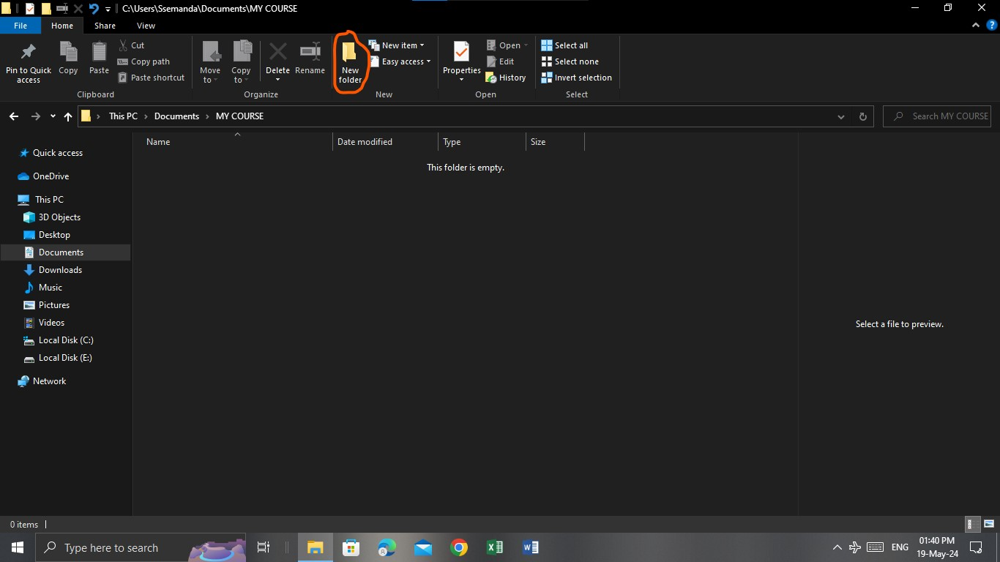
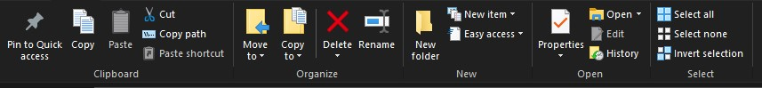
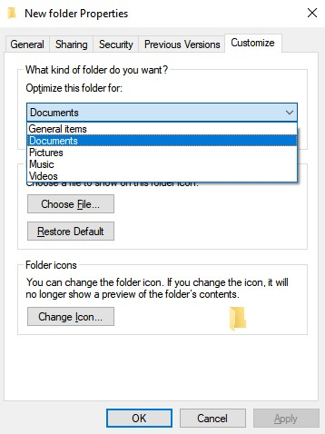
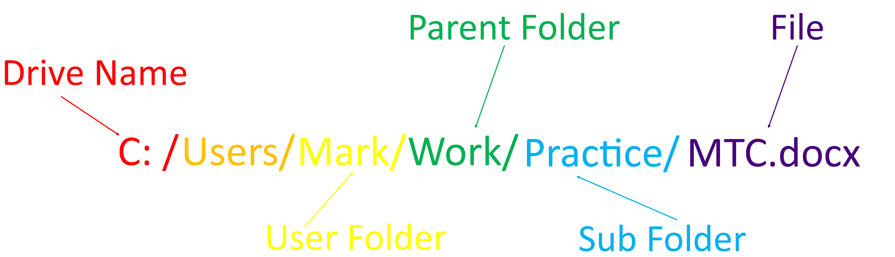

File and Folder Management
In this section
Manipulating folders
Folder Management
Uses of folders
Creating files
Manipulating files
File Management
Useful keyboard shortcuts
In this topic, you will look at the bacics of file and folder management, But first, let's start by defining some of the most relevant terminologies as shown below;
| Terminology | Definition |
|---|---|
| Folder | A virtual contianer in which files on computer are stored |
| File | An virtual item that is stored on a computer |
| Icon | A graphical representation of a program or command on a computer |
| Sub-folder | A folder that is placed in or is a child of another folder. |
| Copy | To duplicate an item on a computer and place it on the system's clipboard |
| Cut | To move an element from its original location to the clipboard or another location permanently |
| Paste | To move an item placed on the clipboard to a new location |
| Clipboard | An area in the computer memory where items that have been copied or cut are placed for future use or reference |
Folders
Getting started
As stated above, a folder is a virtual contianer in which files on computer are stored. In the world of ICT, every advanced computer user applies their knowledge on file and folder to arrange their work, protect it, ease file access and significantly bosst productivity. In the same way, different computer programs(applications) use the principles of file and folder management to safely access, store and make use of their source files. In this topic you are going to learn how to safely create files advanced folders and to effectively make use of the information stored in them.
Creating a folder
A folder can be created using three distinct ways. The most common and easiest way of creating a folder is by navigating to the folder's to be new location using File Explorer . To open file explorer is to use the combination Windows + E on your keyboard or simply type File explorer in your Windows search box as shown below;

Once the widow is open, navigate to the preffered location of the folder and use the "New folder option" of the Home tab's region as illustrated in the picture below;

Once this has been done, you can use this newly created folder to store and organise your files
Manipulating Folders
Once a folder has been created, various actions can be taken upon it. In the File explorer, these actions are reflected in the ribbon and are active once the folder has been selected and is highlighted as shown below;

Definitions
OpeningThis refers to the process of viewing the contents of the folder.
CuttingThis is the mpving of a folder from its origi9nal location to an new one or to the system's clipboard
CopyingThis involves copyimg an item from its original position to the system's clipboard
RenamingThis involves modifying the name of the folder
DeletingThis is simply moving the folder to the system's recycle bin or permanenetly erasing it from the computer's memory
Content SpecificationThis is the specification of the type of items which will be stored in the folder. This is done through selecting the folder and accessing it's properties via the properties options in the home tab's ribbon until a menu like the one shown below is dispplayed on the screen.

Compressing and zipping
This is the process of making the folder's contents occupy less disk space to ease storage and sharing. If the contents oif the folder are to be accessed the contents of the compressed folder will be extracted and the contents will be moived to a new folder as the user may decide. The illustration below shows the different operations related to compressing and zipping folders.

Accessing folders
To access a folder, a person must know the location of the folder in the local file system, this is done with the help of a File Path which is a tree like guide through various irectories and sub-folders to where the folder is located. The image below shows the anatomy of a simple file path.

Uses of folders
- For storing files
- For separating and arranging files to prevent disorganisation and confusion among computer users
- They help to ease file access
- For protecting files from unauthorised access
- For backing up files
Files
Getting Started
A file is a virtual item that is stored on a computer, basically the normal usage and running of a computer depends on the manipulation of folders needed by thue user and the manipulation of the different files needed by both the computer's operating system and any installed software. A file can be an image, a document, a spreadsheet , a code file etc.
Note: Just so that you can know, the process of manipulating and accessing files using file explorer is the same as that for folders, we're just going through the important stuff that didn't make both ends
Creating files
A file can be created by navigating to the desired location using file explorer and selecting the "New Item" option form the ribbon and selecting the desired file type. Or by right clicking in the body of the desired location and selecting the "New" option from the pop-up menu as shown below.

Identifying Files
The process of identifyinjg files is made easy by use of file extensions.A file extension is an addition to the file name that identifies different types of files, their uses and the applications that can be used to identify them. To view the different extensions on your device, search and opne Command Prompt and on command line type assoc and the list of all the file extensions will be dispalyed as sgoen below.

Useful keyboard sortcuts
| Action | KeyBoard Shortcuts |
|---|---|
| Copying | Ctrl + C |
| Pasting | Ctrl + V |
| Cutting | Ctrl + X |
| Accessing the syatem clipboard | Windows + V |
| Creating a new folder | Ctrl + Shift + N |
| Opening File explorer | Windows + E |
| Renaming a folder/file | F2 |
| Deleting | Ctrl + D |
Congratulations, you have made it through this topic, you can now take our quiz on this topic to where you need to be corrected.
All rights Reserved